Ujaval Gandhi
Ujaval GandhiRad sa atributima (QGIS3)¶
GIS podaci imaju dva dela - karakteristike i atribute. Atributi su strukturirani podaci o svakoj karakteristici. Ovaj tutorijal pokazuje kako da vidite atribute GIS vektorskog sloja i da izvršite osnovne upite nad njima u QGIS-u.
Pregled zadataka¶
Skup podataka za ovaj tutorijal sadrži informacije o naseljenim mestima širom sveta. Zadatak je da se upitaju i pronađu svi glavni gradovi na svetu koji imaju populaciju veću od 1 miliona i da se rezultujući podskup sačuva kao GeoJSON datoteka.
Druge veštine koje ćete naučiti¶
Izaberite elemente iz sloja koristeći izraze.
Korišćenje trake sa alatkama Atributi.
Izvoz odabranih elemenata u sloju.
Dobijte podatke¶
Natural Earth pruža skup podataka „Naseljena mesta <http://www.naturalearthdata.com/downloads/10m-cultural-vectors/10m-populated-places/>“. Preuzmite jednostavan skup podataka (sa manje kolona) <https://www.naturalearthdata.com/http//www.naturalearthdata.com/download/10m/cultural/ne_10m_populated_places_simple.zip>`_.
Radi lakšeg snalaženja, možete direktno preuzeti kopiju skupa podataka sa linka ispod:
ne_10m_populated_places_simple.zip
Izvor podataka [NATURALEARTH]
Procedura¶
Pronađite datoteku
ne_10m_populated_places_simple.zipu QGIS pregledaču i proširite je. Izaberite datotekune_10m_populated_places_simple.shpi prevucite je na platno.
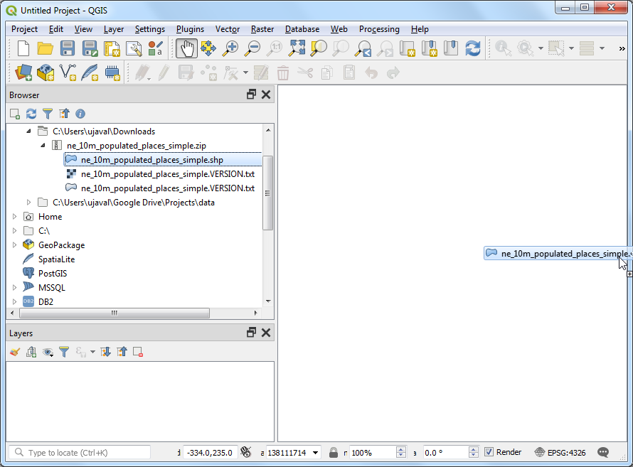
Novi sloj
ne_10m_populated_places_simpleće sada biti učitan u QGIS i videćete mnogo tačaka koje predstavljaju naseljena mesta sveta. Podrazumevani prikaz na QGIS platnu prikazuje geometriju GIS sloja. Svaka tačka takođe ima pridružene atribute. Hajde da ih pogledamo. Pronađite Attributes Toolbar. Ova traka sa alatkama sadrži mnogo korisnih alata za pregled, pregled, izbor i izmenu atributa sloja.
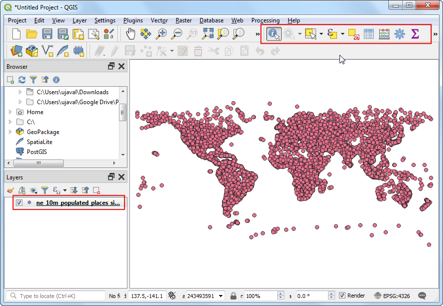
Белешка
Ako ne vidite traku sa alatkama, možete je omogućiti iz .
Kliknite na dugme Identifikuj na Traci sa alatkama za atribute. Kada je alat izabran, kliknite na bilo koju tačku na platnu. Povezani atributi te tačke biće prikazani u novom panelu Identifikuj rezultate. Kada završite sa istraživanjem atributa različitih tačaka, možete kliknuti na dugme Zatvori.
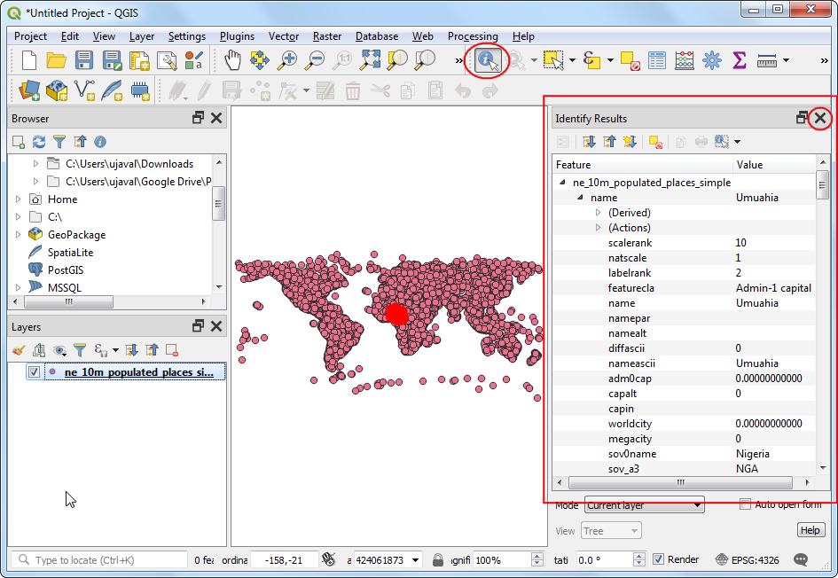
Umesto da prikazujemo atribute pojedinačno, možemo ih sve zajedno videti kao tabelu. Kliknite na dugme Otvori tabelu atributa na Traci sa alatkama za atribute. Takođe možete kliknuti desnim tasterom miša na sloj
ne_10m_populated_places_simplei izabrati Otvori tabelu atributa.

Možete se horizontalno kretati i pronaći kolonu pop_max. Ovo polje sadrži broj stanovnika povezanog mesta. Možete dvaput kliknuti na zaglavlje polja da biste sortirali kolonu po opadajućem redosledu.
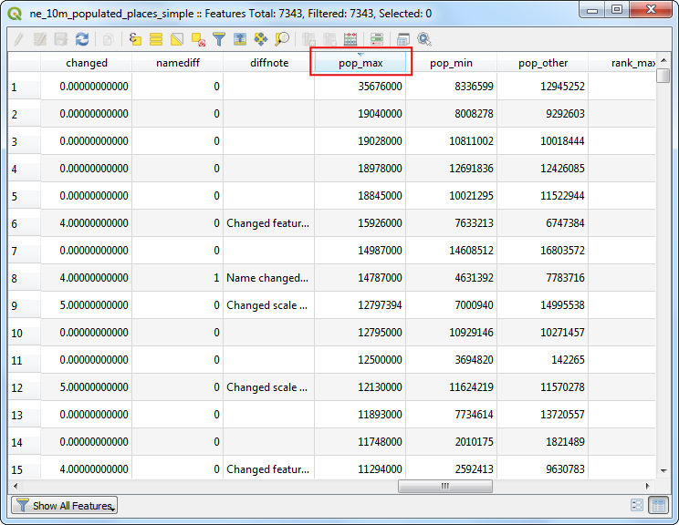
Sada smo spremni da izvršimo naš upit nad ovim atributima. QGIS koristi izraze slične SQL-u za izvršavanje upita. Kliknite na dugme Izaberi elemente koristeći izraz.

U prozoru Izaberi po izrazu, proširite odeljak Polja i vrednosti i dvaput kliknite na oznaku
pop_max. Primetićete da je dodata u odeljak izraza na dnu. Ako niste sigurni u vrednosti polja, možete kliknuti na dugme Sve jedinstvene da biste videli koje su vrednosti atributa prisutne u skupu podataka. Za ovu vežbu, tražimo sve karakteristike koje imaju populaciju veću od 1 milion. Zato dopunite izraz kao što je prikazano ispod i kliknite na Izaberi karakteristike, a zatim na Zatvori.
"pop_max" > 1000000
Белешка
U QGIS Expression engine-u, tekst sa dvostrukim navodnicima se odnosi na polje, a tekst sa jednostrukim navodnicima na vrednost stringa.
Primetićete da su neki redovi u tabeli atributa sada izabrani. Prozor sa oznakama se takođe menja i prikazuje broj izabranih karakteristika.
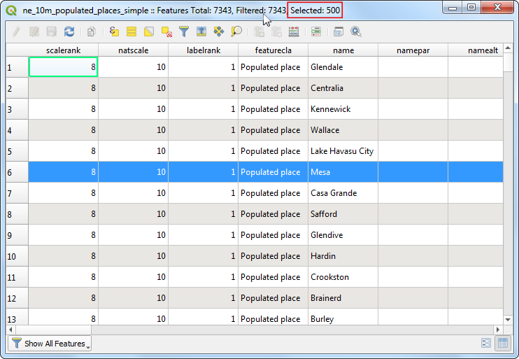
Zatvorite prozor tabele atributa i vratite se u glavni prozor QGIS-a. Primetićete da je podskup tačaka sada prikazan žutom bojom. Ovo je rezultat našeg upita, a izabrane tačke su one koje imaju vrednost atributa
pop_maxveću od1000000.
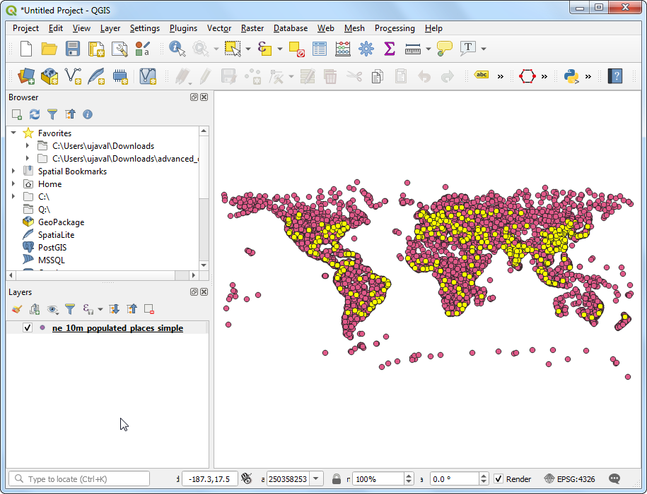
Hajde da ažuriramo naš upit tako da uključi uslov da mesto treba da bude i glavni grad pored toga što ima populaciju veću od 1 milion. Da biste brzo došli do uređivača izraza, možete koristiti dugme Izaberi karakteristike po izrazu u Traci sa alatkama za atribute.
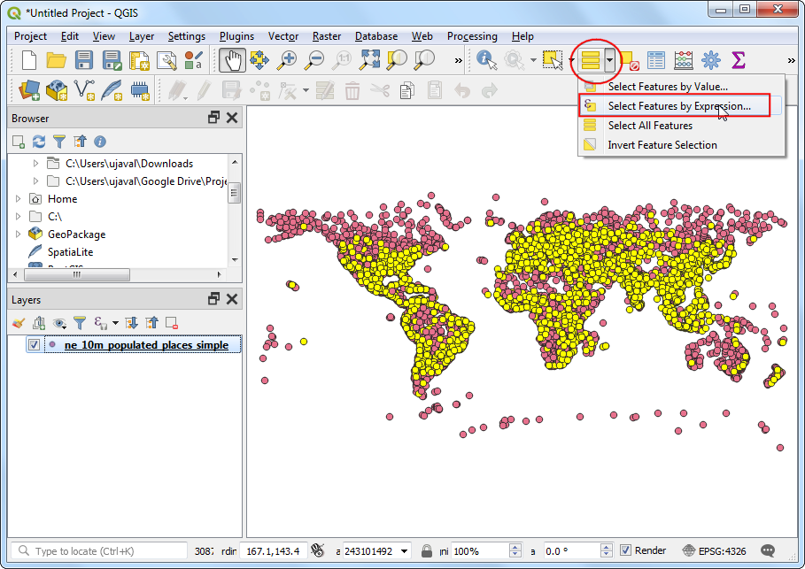
Polje koje sadrži podatke o glavnim gradovima je adm0cap. Vrednost
1označava da je mesto glavni grad. Ovaj kriterijum možemo dodati našem prethodnom izrazu koristeći operator i. Unesite izraz kao što je prikazano ispod i kliknite na Izaberi karakteristike, a zatim na Zatvori.
"pop_max" > 1000000 and "adm0cap" = 1
Vratite se u glavni QGIS prozor. Sada ćete videti manji podskup odabranih tačaka. Ovo je rezultat drugog upita i prikazuje sva mesta iz skupa podataka koja su glavni gradovi zemalja, kao i koja imaju populaciju veću od 1 milion.
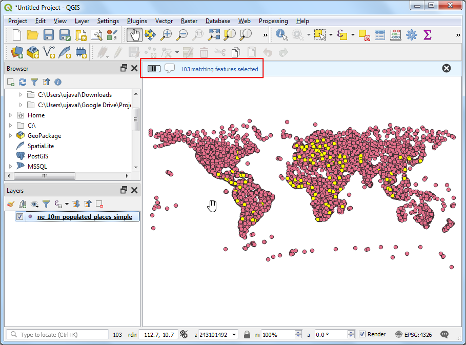
Sada ćemo izvesti izabrane elemente kao novi sloj. Kliknite desnim tasterom miša na sloj
ne_10m_populated_places_simplei idite na
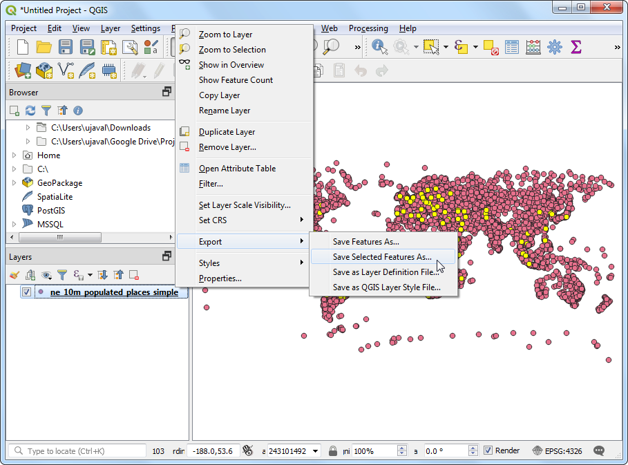
Možete izabrati bilo koji format koji želite kao Format. Za ovu vežbu, izabraćemo
GeoJSON. GeoJSON je tekstualni format koji se široko koristi u veb mapiranju. Kliknite na dugme … pored Ime datoteke i unesitepopulated_capitals.geojsonkao izlaznu datoteku.
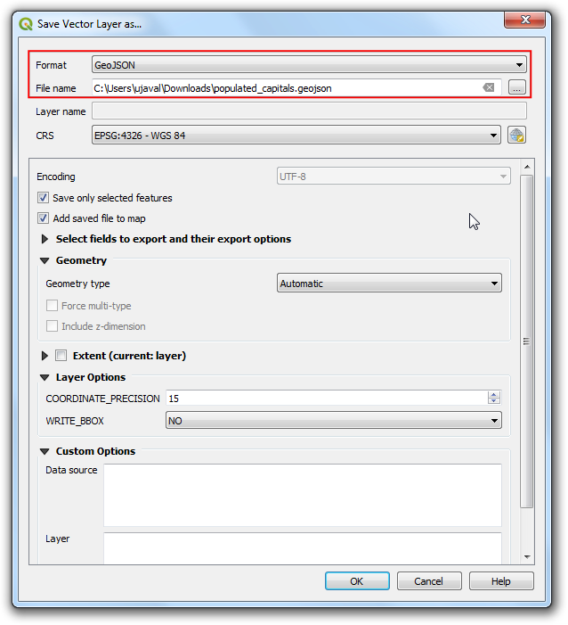
Ulazni podaci imaju mnogo kolona. Možete da izaberete samo podskup originalnih kolona za izvoz. Proširite odeljak Izaberite polja za izvoz i njihove opcije izvoza. Kliknite na Poništi izbor svih i označite kolone
nameipop_max. Kliknite na OK.
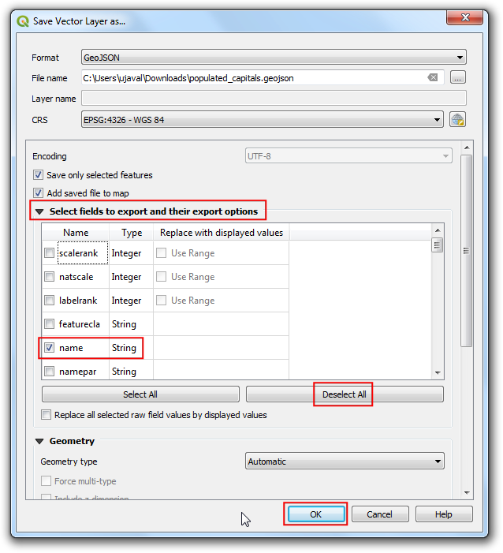
Novi sloj
populated_capitalsće biti učitan u QGIS. Možete ukloniti oznaku sa slojane_10m_populated_places_simpleda biste ga sakrili i videli tačke iz novoeksportovanog sloja.

If you want to give feedback or share your experience with this tutorial, please comment below. (requires GitHub account)